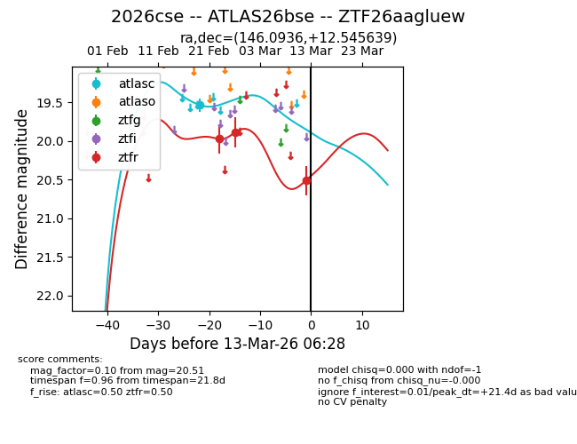
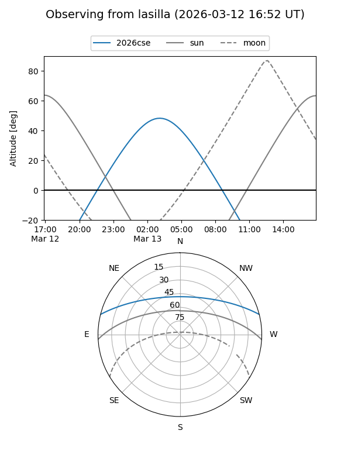
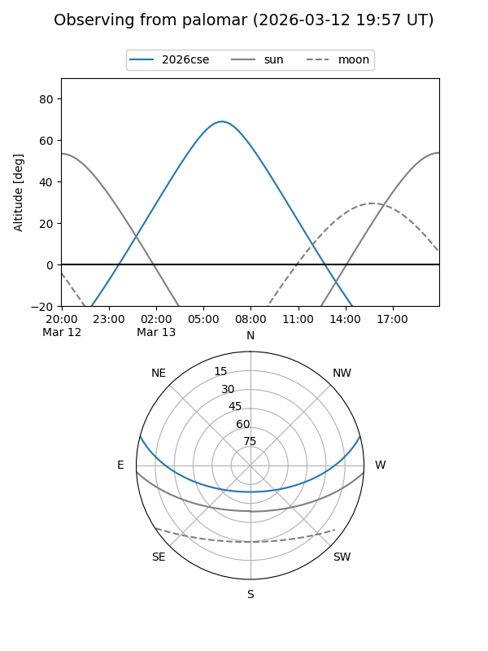
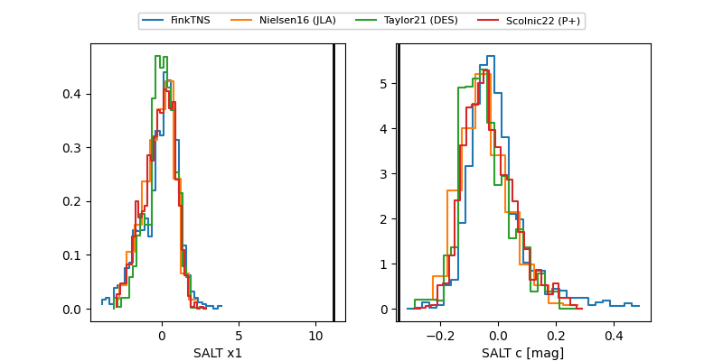

2026cse
Target 2026cse at 2026-03-13 06:29
Aliases and brokers:
FINK: link
Lasair: link
ALeRCE: link
TNS: link
YSE: link
alt names
ZTF26aagluew (ztf,fink_ztf)
2026cse (tns,yse)
ATLAS26bse (atlas)
Coordinates:
equatorial (ra, dec) = 146.0936,+12.54564
equatorial (HMS+DMS) = 09:44:22.46,+12:32:44.30
galactic (l, b) = (221.8474,+43.95686)
Flags:
Photometry:
last atlasc=19.53, ztfr=20.51
1 atlasc, 3 ztfr detections
Lightcurve

Visibility


Additional plots
